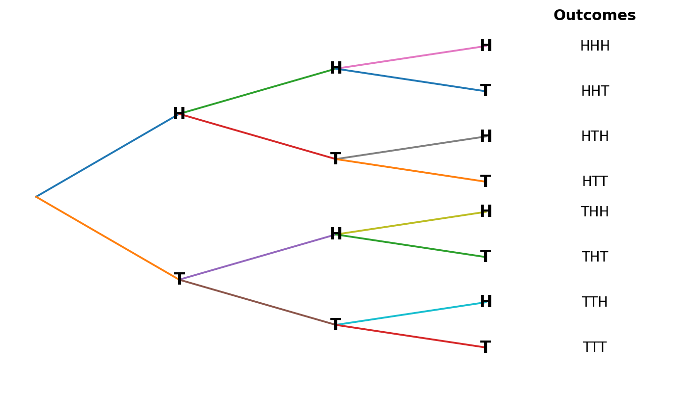
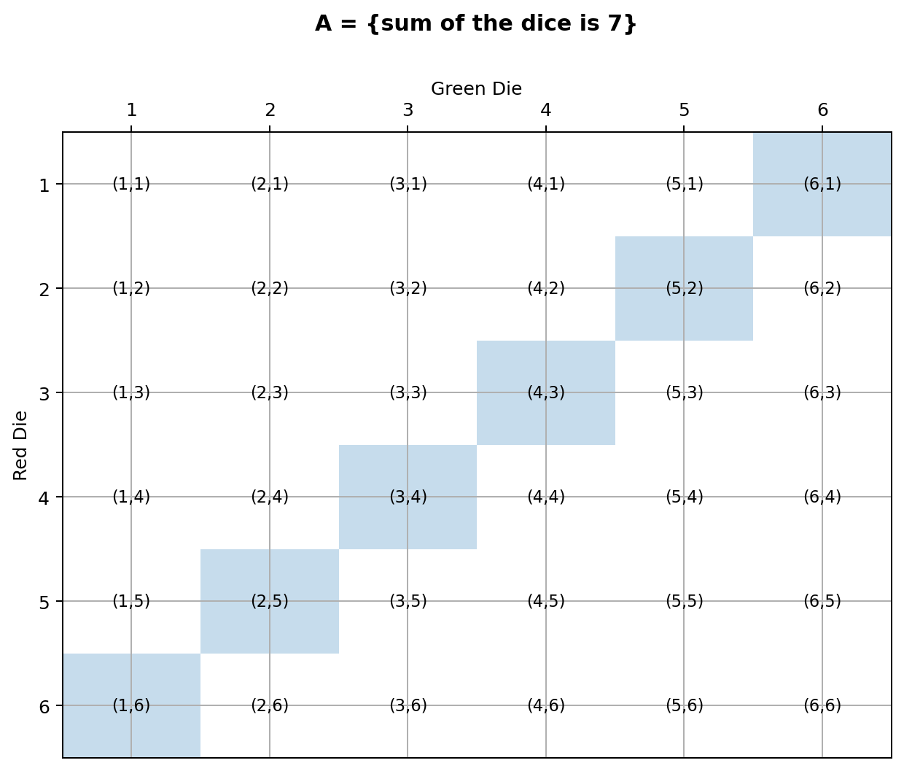
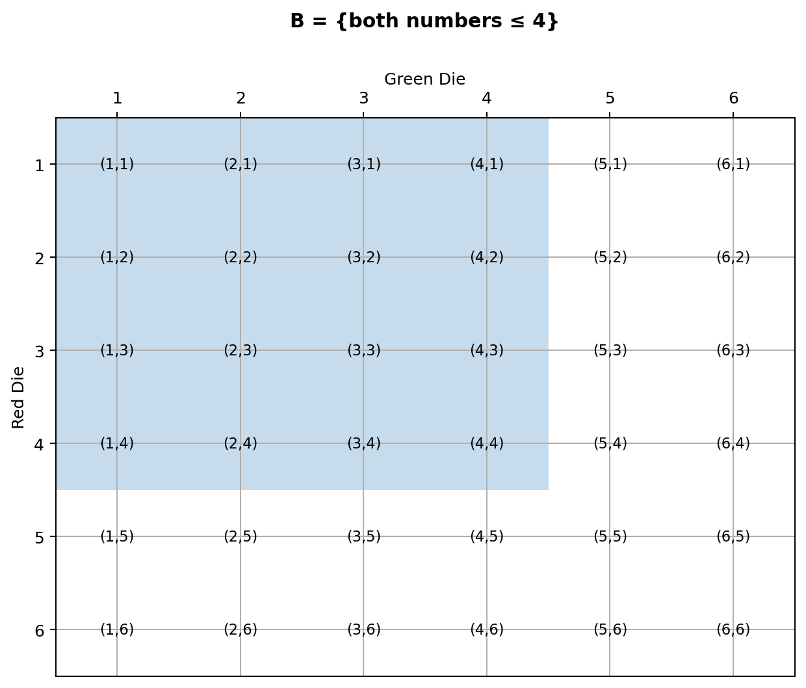
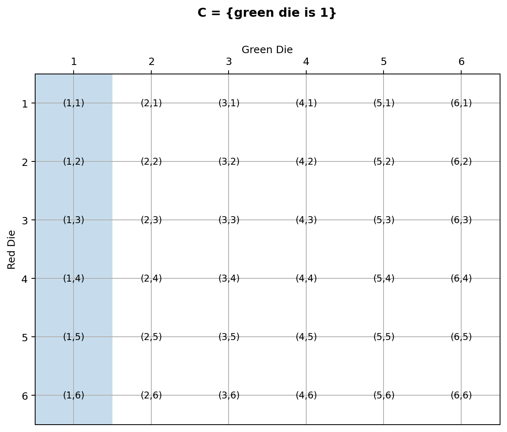

STA296U — Section 4
Probability
In This Section
Counting Rules
Before we discuss probability, some basic counting principles and the idea of factorials will be introduced. These concepts are useful at times when identifying the number of outcomes in an experiment and when probabilities are calculated.
Example
a. How many different ways are there to arrange the 6 letters in the word SUNDAY?
b. Suppose you have a lock with a three digit code. Each digit is a number 0 through 9. How many possible codes are there?
Show Answers
a. In this case we have 6 distinct letters. First, create a space for each letter (6 spaces). Next, fill in the spaces with the number of options from left to right. The first space has 6 options since any letter can go in that space. The second space has 5 options since one letter is already in the first space. Continue this pattern and then multiply to get the number of arrangements as seen below.
b. In this case we will have three spaces, one for each digit of the code. The first space has 10 options since it can be any number 0 to 9. Here, the second digit of the code can be the same as the first so the second space also has 10 options. Once the spaces are filled, multiply to get the number of possible codes.
The symbol n!, read as “n factorial” is computed as follows:
1! = 1
2! = 2 · 1 = 2
3! = 3 · 2 · 1 = 6
4! = 4 · 3 · 2 · 1 = 24
and so on
Example
In how many ways can you select a president, vice president, treasurer, and secretary from a group of 10?
Show Answer
Notice here that order matters because person A being president and person B being vice-president is different
Example
In how many ways can a committee of 5 senators be selected from a group of 8 senators?
Show Answer
Here order does not matter because it is a committee. It does not matter what order people are selected, it just matters which 5 people are on the committee
Events, Sample Spaces, and Probability
Example
Identify the sample space for each of the following
a. Flip a coin
b. Roll a die
c. Measure heights of random people
Show Answers
a. sample space = {H, T}
b. sample space = {1, 2, 3, 4, 5, 6}
c. sample space = {height of shortest person to height of tallest person}
The above example illustrates a common way to denote a sample space. Notice that when you flip a coin you get a qualitative variable and when you roll a die you get a discrete quantitative variable. These are the types of variables we will deal with to introduce the basic ideas of probability in this section. In these cases, each outcome of the experiment can be listed using set notation as seen above. Feel free to abbreviate when appropriate as I did for the coin flip (H for head and T for tails). Notice when you measure the heights of random people, you get a continuous quantitative variable. In the case of continuous variables the outcomes cannot be listed because there is an infinite number of possible outcomes. Therefore, the sample space is represented as an interval. Probability for continuous random variables will be dealt with in later sections.
Example: Flip a Penny, Nickel, and a Dime
a. How many possible outcomes are there?
b. Identify the sample space.
c. Suppose A is the event of getting all three tails. Identify A. What is P(A)?
d. Suppose B is the event of getting exactly two tails. Identify B. What is P(B)?
e. Suppose C is the event of getting exactly one tail. Identify C. What is P(C)?
f. Suppose D is the event of getting no tails. Identify D. What is P(D)?
Show Answers
a. 2 · 2 · 2 = 8 possible outcomes

sample space = {HHH, HHT, HTH, HTT, THH, THT, TTH, TTT}
c. A = {TTT}, P(A)=1/8=0.125
d. B = {HTT, THT, TTH}, P(B)=3/8=0.375
e. C = {HHT, HTH, THH}, P(C)=3/8=0.375
f. D = {HHH}, P(D)=1/8=0.125
Types of Probability
The intersection of two events, denoted A ∩ B, is the event composed of outcomes from A and B. In other words, if both A and B occur, then it is said that A ∩ B occurred.
We say the events A and B are mutually exclusive or disjoint if they cannot occur together. When P(A ∩ B) = 0
The union of two events, denoted A ∪ B, is the event composed of outcomes from A or B. In other words, if A occurs, B occurs, or both A and B occur, then it is said that A ∪ B occurred.
Two Dice Example
A = {sum of the dice is 7}
B = {both numbers ≤ 4}
C = {green die is 1}



Simple Probabilities: P(A)=6/36=0.167, P(B)=16/36=0.444, P(C)=6/36=0.167
Intersections: P(A∩B)=2/36=0.056, P(A∩C)=1/36=0.028, P(B∩C)=4/36=0.111
Unions: P(A∪B)=20/36=0.556, P(A∪C)=11/36=0.306, P(B∪C)=18/36=0.5
Complements: P(A̅)=0.833, P(B̅)=0.556, P(C̅)=0.833
Conditional Probabilities: P(A|B)=0.125, P(B|A)=0.333, P(A|C)=0.167, P(C|A)=0.167, P(B|C)=0.667, P(C|B)=0.25
Traffic Tickets Example
| 0 tickets | 1 ticket | 2 tickets | 3 or more tickets | Total | |
|---|---|---|---|---|---|
| Female | 1192 | 321 | 72 | 15 | 1600 |
| Male | 695 | 487 | 141 | 77 | 1400 |
| Total | 1887 | 808 | 213 | 92 | 3000 |
A = {selected driver is female}
B = {selected driver has at least 2 tickets}
Show Answers
P(A)=0.53333
P(B)=0.10167
P(A∩B)=0.029
P(A∪B)=0.606
P(A̅)=0.46667
P(A|B)=0.28524
Independent and Dependent Events
Card Example
Suppose we are dealing with a standard deck of cards (52 cards and 4 aces). We will draw two cards without replacement (meaning after the first card is drawn, it will not be put back in the deck before drawing the second card).
A = {first card is an ace} B = {second card is an ace}
Show Answers
Without replacement, A and B are dependent and P(A ∩ B) = (4/52)(3/51) = 0.004525.
With replacement, A and B are independent and P(A ∩ B) = (4/52)(4/52) = 0.00591.
City/County Government Example
| Favor (F) | Oppose | Total | |
|---|---|---|---|
| City (C) | 80 | 40 | 120 |
| Outside | 20 | 10 | 30 |
| Total | 100 | 50 | 150 |
Show Answers
P(F)=0.667; P(C)=0.8; P(F∩C)=0.533; P(F∪C)=0.933; P(F̅)=0.333; P(C̅)=0.2; P(F|C)=0.667.
No, living in the city does not have an effect on whether someone favors combining city and county government. We know that F and C are independent because P(F|C) = P(F). In these types of problems make sure you check to see if the probabilities are equal. If the numbers were different in the table here, the answer to this question could change.